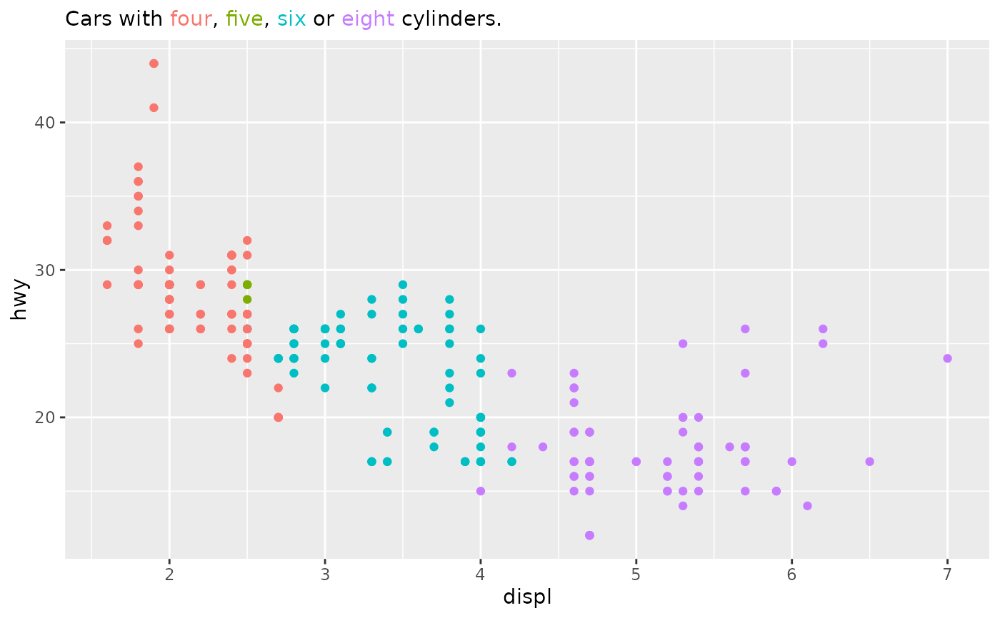
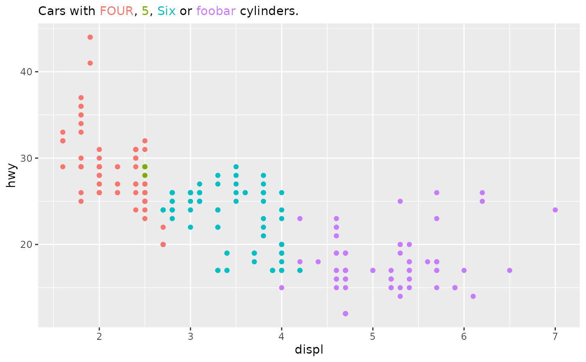

Subtitle with coloured phrases
guide_subtitle.RdThis guides formats a piece of text with colours determined from the scale.
Usage
guide_subtitle(title = waiver(), open = "{.", close = "}", theme = NULL)Arguments
- title
A
<character[1]>containing text to use as subtitle. Text formatting is discussed in details.- open, close
A
<character[1]>delimiter indicating where colour formatting begins (open) and ends (close).- theme
A
<theme>object to style the guide individually or differently from the plot's theme settings. Thethemeargument in the guide overrides and is combined with the plot's theme.
Details
Text formatting
Chunks of text are formatted as follows: the title is chopped up into
pieces split by the open and close delimiters. When the open delimiter
is followed by an integer, that integer is matched up against the scale's
breaks. The piece of text between that open delimiter and the associated
close delimiter is that coloured with the break's colour.
For example, in the title
"A {.1 quick} brown {.3 fox} jumps over the {.2 lazy dog}.", the word
"quick" is given the scale's first colour, "fox" is given the third
colour and "lazy dog" is given the second colour. The first space after
the integer index gets trimmed.
When there is no text inside the braces other than the index, the scale's labels are inserted as text.
While implemented as a legend guide, it takes style options from the
plot.subtitle theme element. As it is not a true subtitle, there might
be complications if other guides co-occupy the "top" legend position.
Right-to-left scripts
The typesetting of this guide is primitive and only concerns itself with placing text pieces, not individual glyphs. The only consideration given to right-to-left script is that a line is converted from LtR to RtL when all pieces of text on a line contain characters from RtL character sets. Bidirectional text is given no consideration within this function. Glyphs that should have ligatures in normal text, but are in separate pieces will probably not render as ligatures. The task of actually rendering what is within pieces of text, is handled by the graphics device, which have varying degrees of modern text feature support. The author of this function, who only knows LtR natural languages, profusely apologises for this inconvenience.
See also
Other standalone guides:
guide_axis_custom(),
guide_colour_ring(),
guide_colourbar_custom(),
guide_coloursteps_custom()
Examples
# A standard plot
p <- ggplot(mpg, aes(displ, hwy, colour = factor(cyl))) +
geom_point()
# Typical use case
p + scale_colour_discrete(
name = "Cars with {.1 four}, {.2 five}, {.3 six} or {.4 eight} cylinders.",
guide = "subtitle"
)

# If there is no text in between the delimiters, the scale's `labels` are
# substituted.
p + scale_colour_discrete(
labels = c("FOUR", "5", "Six", "foobar"),
name = "Cars with {.1}, {.2}, {.3} or {.4} cylinders.",
guide = "subtitle"
)

# Using different text delimiters
p + guides(colour = guide_subtitle(
"Cars with <1 four>, <2 five>, <3 six> or <4 eight> cylinders.",
open = "<", close = ">"
))
 # # For use with {ggtext}, mix html with the open and closing delimiters.
# # Leave out the '\' before quotation marks, it didn't document without
# # these backslashes :(
# p +
# scale_colour_discrete(
# name = \"Cars with {.1}, <b>{.2 five}</b>, {.3} or {.4} <i>cylinders</i>.\",
# guide = "subtitle"
# ) +
# theme(plot.subtitle = ggtext::element_markdown())
# # For use with {ggtext}, mix html with the open and closing delimiters.
# # Leave out the '\' before quotation marks, it didn't document without
# # these backslashes :(
# p +
# scale_colour_discrete(
# name = \"Cars with {.1}, <b>{.2 five}</b>, {.3} or {.4} <i>cylinders</i>.\",
# guide = "subtitle"
# ) +
# theme(plot.subtitle = ggtext::element_markdown())